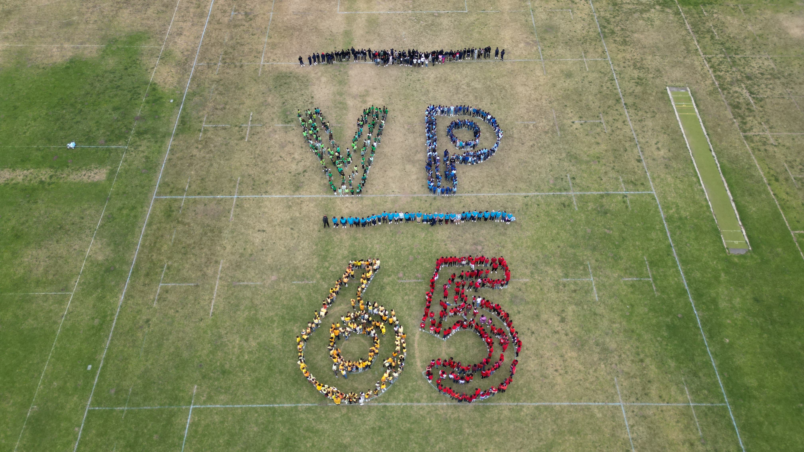
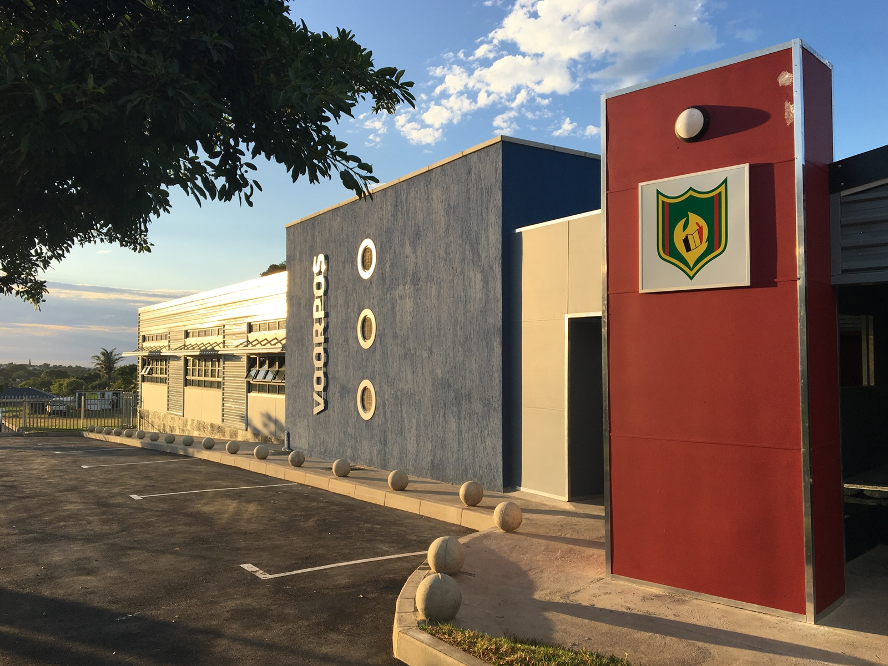

VOLHARD
Founded in 1959 with just 74 learners, Voorpos Primary School began as an Afrikaans-medium school serving the local community. Over the years, the school evolved to meet the changing needs of its learners, becoming a dual-medium school in 1996 and later transitioning to a fully English-medium primary school in 2007.
Through dedicated leadership and a commitment to quality education, Voorpos has grown from a small community school into a thriving institution serving approximately 700 learners with a staff of more than 40 members.
Today, Voorpos Primary School continues to uphold its proud tradition of academic excellence, cultural development, and sporting achievement. While much has changed since our founding, our commitment to nurturing knowledge, character, and opportunity for every learner remains as strong as ever.
Our story is one of growth, transformation, and perseverance—a legacy that continues to inspire future generations.
A brief overview of our school’s journey.
School founded.
Renovations completed.

Celebrating 65 years.

Growing in excellence.
A journey filled with growth, achievement, and unforgettable memories at Voorpos Primary.


We believe education is a partnership between the school, learners, and families. Together, we create an environment where children grow academically, socially, and emotionally while developing the confidence and values needed for future success.